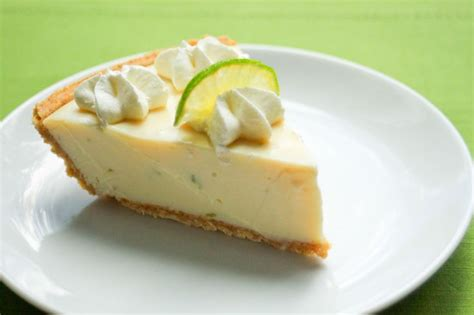

JPG Format Example
About This Image
The graham cracker crust combined with the sweet and tart taste of the creamy key lime filling. Adding a sweet and fluffy dollop of whipped cream on top makes key lime pie one of my favorite desserts ever. I've been wanting to make one from scratch for some time now.
Why JPG Format?
I chose a JPG for this image to showcase the most basic, commonly-used image format used on the web. It is a great all-around format that works well for most basic images on the web. JPGs also use lossy compression; they sacrifice data for the sake of making themselves smaller. Keep in mind that JPGs will appear more pixelated as you zoom in on them.
Image source: Florida Key Treasures